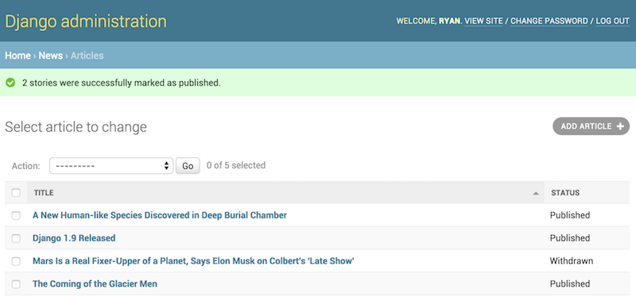

Actions d’administration¶
Le mode de travail de base de l’administration de Django est en résumé : « sélectionner un objet, puis le changer ». Cela fonctionne bien pour la majorité des cas d’utilisation. Toutefois, si vous devez effectuer la même modification à plusieurs objets à la fois, ce mode de travail peut être assez fastidieux.
Dans ces cas, l’administration de Django vous permet d’écrire et d’inscrire des « actions » – des fonctions appelées avec une liste d’objets sélectionnés depuis la page de liste pour modification.
Si vous examinez n’importe quelle liste d’objets à modifier dans l’administration, vous verrez cette fonctionnalité en action ; Django est livré avec une action « supprimer les objets sélectionnés » disponible pour tous les modèles. Par exemple, voici le module utilisateur de l’application django.contrib.auth intégrée dans Django :

Avertissement
L’action « supprimer les objets sélectionnés » utilise QuerySet.delete() pour des raisons d’efficacité, entraînant une importante mise en garde : la méthode delete() de vos modèles ne sera pas appelée.
Si vous souhaitez modifier ce comportement, vous pouvez surcharger ModelAdmin.delete_queryset() ou écrire une action personnalisée qui s’occupe de la suppression à votre manière – par exemple, en appelant Model.delete() pour chacun des éléments sélectionnés.
Pour plus d’informations sur la suppression en vrac, voir la documentation sur la suppression d’objets.
Lisez la suite pour savoir comment ajouter vos propres actions à cette liste.
Écriture d’actions¶
La meilleure façon d’expliquer les actions est de montrer un exemple. Allons-y !
Un cas d’utilisation courant pour les actions d’administration est la mise à jour en vrac d’un modèle. Imaginez une application de nouvelles avec un modèle Article:
from django.db import models
STATUS_CHOICES = [
('d', 'Draft'),
('p', 'Published'),
('w', 'Withdrawn'),
]
class Article(models.Model):
title = models.CharField(max_length=100)
body = models.TextField()
status = models.CharField(max_length=1, choices=STATUS_CHOICES)
def __str__(self):
return self.title
Une tâche courante que nous pourrions réaliser avec un tel modèle est de mettre à jour l’état d’un article de « brouillon » à « publié ». Nous pourrions facilement le faire dans l’administration un article à la fois, mais si nous voulions publier en vrac une série d’articles, ce serait fastidieux. Écrivons donc une action qui nous permet de modifier l’état d’un article à « publié ».
Écriture des fonctions d’action¶
Tout d’abord, nous devons écrire une fonction qui est appelée quand l’action est déclenchée depuis l’administration. Les fonctions d’action sont des fonctions ordinaires qui acceptent trois paramètres :
- La classe
ModelAdminconcernée - Un objet
HttpRequestreprésentant la requête actuelle - Un jeu de requête
QuerySetcontenant l’ensemble des objets sélectionnés par l’utilisateur.
Notre fonction de publication d’articles n’aura pas besoin de la classe ModelAdmin ni de l’objet requête, mais nous allons utiliser le jeu de requête :
def make_published(modeladmin, request, queryset):
queryset.update(status='p')
Note
Pour de meilleures performances, nous utiliserons la méthode update (mise à jour) du jeu de requête. D’autres types d’actions pourraient avoir besoin de manipuler chaque objet individuellement ; dans ce cas, nous itérerions sur le jeu de requête :
for obj in queryset:
do_something_with(obj)
C’est en fait tout ce qu’il y a besoin d’écrire pour une action ! Toutefois, nous allons effectuer une étape supplémentaire facultative mais utile et donner un « joli » titre à l’action dans l’interface d’administration. Par défaut, cette action apparaît dans la liste d’actions comme « Make published » – le nom de la fonction avec les soulignements remplacés par des espaces. C’est bien, mais nous pouvons fournir un nom meilleur et plus convivial en donnant à la fonction make_published un attribut short_description:
def make_published(modeladmin, request, queryset):
queryset.update(status='p')
make_published.short_description = "Mark selected stories as published"
Note
Cela peut sembler familier ; l’option d’administration list_display utilise aussi la même technique pour fournir des descriptions lisibles pour les fonctions de rappel qui y sont inscrites.
Ajout d’actions à la classe ModelAdmin¶
Ensuite, il faudra informer la ModelAdmin de l’action. Cela fonctionne comme n’importe quelle autre option de configuration. Ainsi, le fichier admin.py complet avec l’action et son inscription ressemblerait à :
from django.contrib import admin
from myapp.models import Article
def make_published(modeladmin, request, queryset):
queryset.update(status='p')
make_published.short_description = "Mark selected stories as published"
class ArticleAdmin(admin.ModelAdmin):
list_display = ['title', 'status']
ordering = ['title']
actions = [make_published]
admin.site.register(Article, ArticleAdmin)
Avec ce code, la liste d’objets à modifier dans l’interface d’administration ressemble à ceci :

C’est vraiment tout ce qu’il y a à faire ! Si vous brûlez d’écrire vos propres actions, vous en savez maintenant assez pour débuter. Le reste de ce document couvre des techniques plus avancées.
Gestion des erreurs dans les actions¶
S’il y a des conditions d’erreur prévisibles qui peuvent survenir lors de l’exécution de votre action, vous devriez faire amende honorable en informant l’utilisateur du problème. Cela signifie gérer les exceptions et utiliser django.contrib.admin.ModelAdmin.message_user() pour afficher une description conviviale du problème dans la réponse.
Techniques d’action avancées¶
Il y a quelques options et possibilités supplémentaires que vous pouvez exploiter pour des options plus avancées.
Actions en tant que méthodes de ModelAdmin¶
L’exemple ci-dessus montre l’action make_published définie comme une fonction. C’est tout à fait correct, mais ce n’est pas parfait d’un point de vue conception de code : comme l’action est étroitement couplée à l’objet Article, il paraît logique de fusionner l’action dans l’objet ArticleAdmin même.
Vous pouvez le faire comme ceci
class ArticleAdmin(admin.ModelAdmin):
...
actions = ['make_published']
def make_published(self, request, queryset):
queryset.update(status='p')
make_published.short_description = "Mark selected stories as published"
Remarquez d’abord que nous avons transformé make_published en une méthode et renommé le paramètre modeladmin à self, puis que nous avons placé la chaîne make_published dans actions à la place d’une référence de fonction directe. Cela indique à ModelAdmin de rechercher l’action en tant que méthode.
Définir les actions en tant que méthodes donne à l’action un accès plus idiomatique à la classe ModelAdmin elle-même, permettant à l’action d’appeler l’une des méthodes définies par l’application d’administration.
Par exemple, nous pouvons utiliser self pour afficher un message à l’utilisateur l’informant que l’action a réussi :
from django.contrib import messages
from django.utils.translation import ngettext
class ArticleAdmin(admin.ModelAdmin):
...
def make_published(self, request, queryset):
updated = queryset.update(status='p')
self.message_user(request, ngettext(
'%d story was successfully marked as published.',
'%d stories were successfully marked as published.',
updated,
) % updated, messages.SUCCESS)
Cela fait ressembler l’action à ce que l’administration elle-même réalise après avoir réussi à effectuer une action :
Actions qui fournissent des pages intermédiaires¶
Par défaut, après qu’une action a été effectuée, l’utilisateur est redirigé vers la page d’origine de la liste d’édition. Cependant, certaines actions, en particulier les plus complexes, pourraient devoir renvoyer à des pages intermédiaires. Par exemple, l’action de suppression intégrée demande confirmation avant de supprimer les objets sélectionnés.
Pour fournir une page intermédiaire, renvoyez une réponse HttpResponse (ou une sous-classe) depuis votre action. Par exemple, vous pourriez écrire une fonction d’exportation qui utilise les fonctions de sérialisation de Django pour exporter certains objets sélectionnés en JSON :
from django.core import serializers
from django.http import HttpResponse
def export_as_json(modeladmin, request, queryset):
response = HttpResponse(content_type="application/json")
serializers.serialize("json", queryset, stream=response)
return response
En général, l’exemple ci-dessus n’est pas considéré comme une bonne idée. La plupart du temps, la pratique conseillée est de renvoyer une réponse HttpResponseRedirect et de rediriger l’utilisateur vers une vue que vous avez écrite, en passant la liste des objets sélectionnés dans la chaîne de requête GET. Cela vous permet de fournir une logique d’interaction complexe sur les pages intermédiaires. Par exemple, si vous vouliez fournir une fonction d’exportation plus complète, vous voudriez que l’utilisateur puisse choisir un format et peut-être une liste de champs à inclure dans l’exportation. La meilleure chose à faire serait d’écrire une petite action qui redirige vers la vue d’exportation personnalisée :
from django.contrib.contenttypes.models import ContentType
from django.http import HttpResponseRedirect
def export_selected_objects(modeladmin, request, queryset):
selected = queryset.values_list('pk', flat=True)
ct = ContentType.objects.get_for_model(queryset.model)
return HttpResponseRedirect('/export/?ct=%s&ids=%s' % (
ct.pk,
','.join(str(pk) for pk in selected),
))
Comme vous pouvez le voir, l’action est plutôt succinte ; toute la logique complexe est déléguée à la vue d’exportation. Celle-ci doit se charger de traiter des objets de tout type, d’où la présence du modèle ContentType.
La rédaction de cette vue est laissée en exercice au lecteur.
Actions disponibles pour l’ensemble d’un site¶
-
AdminSite.add_action(action, name=None)¶ Certaines actions sont plus efficaces lorsqu’elles sont mises à la disposition de tous les objets dans le site d’administration – l’action d’exportation définie ci-dessus serait un bon candidat. Vous pouvez rendre une action globalement disponible en utilisant
AdminSite.add_action(). Par exemple :from django.contrib import admin admin.site.add_action(export_selected_objects)
Cela rend l’action
export_selected_objectsglobalement disponible en tant qu’action nommée « export_selected_objects ». Vous pouvez explicitement donner un nom à l’action – utile si vous souhaitez plus tard programmatiquement supprimer l’action – en passant un second argument àAdminSite.add_action()admin.site.add_action(export_selected_objects, 'export_selected')
Désactivation des actions¶
Parfois, vous devez désactiver certaines actions – en particulier celles enregistrées globalement – pour des objets particuliers. Il y a plusieurs façons dont vous pouvez désactiver les actions :
Désactivation d’une action à l’échelle du site¶
-
AdminSite.disable_action(name)¶ Si vous avez besoin de désactiver une action à l’échelle du site vous pouvez appeler
AdminSite.disable_action().Par exemple, vous pouvez utiliser cette méthode pour supprimer l’action intégrée « supprimer les objets sélectionnés » :
admin.site.disable_action('delete_selected')
Une fois que vous avez fait ce qui précède, cette action ne sera plus disponible à l’ensemble du site.
Si toutefois vous avez besoin de réactiver une action globalement désactivée pour un modèle en particulier, il suffit de l’indiquer explicitement dans la liste
ModelAdmin.actions:# Globally disable delete selected admin.site.disable_action('delete_selected') # This ModelAdmin will not have delete_selected available class SomeModelAdmin(admin.ModelAdmin): actions = ['some_other_action'] ... # This one will class AnotherModelAdmin(admin.ModelAdmin): actions = ['delete_selected', 'a_third_action'] ...
Désactivation de toutes les actions pour une classe ModelAdmin particulière¶
Si vous ne voulez aucune action en vrac disponible pour une classe ModelAdmin donnée, définissez ModelAdmin.actions à None:
class MyModelAdmin(admin.ModelAdmin):
actions = None
Cela indique à la classe ModelAdmin de n’afficher ni d’autoriser aucune des actions, y compris les actions globales au site.
Activation ou désactivation conditionnelle des actions¶
-
ModelAdmin.get_actions(request)¶ Enfin, vous pouvez activer ou désactiver conditionnellement les actions selon la requête (et donc par utilisateur) en redéfinissant
ModelAdmin.get_actions().Cela renvoie un dictionnaire d’actions autorisées. Les clés sont des noms d’action, et les valeurs sont des tuples
(fonction, nom, description courte).Par exemple, si vous souhaitez que seuls les utilisateurs dont le nom commence par « J » puissent supprimer des objets en masse
class MyModelAdmin(admin.ModelAdmin): ... def get_actions(self, request): actions = super().get_actions(request) if request.user.username[0].upper() != 'J': if 'delete_selected' in actions: del actions['delete_selected'] return actions
Définition de permissions pour les actions¶
Les actions peuvent limiter leur disponibilité aux utilisateurs ayant des permissions spécifiques en définissant l’attribut allowed_permissions sur la fonction d’action
def make_published(modeladmin, request, queryset):
queryset.update(status='p')
make_published.allowed_permissions = ('change',)
L’action make_published() ne sera disponible que pour les utilisateurs qui passent le contrôle ModelAdmin.has_change_permission().
Si allowed_permissions possède plus d’une permission, l’action sera disponible si l’utilisateur passe au moins l’un des contrôles.
Les valeurs disponibles pour allowed_permissions et leur méthodes de contrôle correspondantes sont :
'add'(ajout) :ModelAdmin.has_add_permission()'change'(modification) :ModelAdmin.has_change_permission()'delete'(suppression) :ModelAdmin.has_delete_permission()'view'(affichage) :ModelAdmin.has_view_permission()
Vous pouvez indiquer d’autres valeurs pour autant que vous implémentiez une méthode correspondante has_<valeur>_permission(self, request) pour la classe ModelAdmin concernée.
Par exemple :
from django.contrib import admin
from django.contrib.auth import get_permission_codename
class ArticleAdmin(admin.ModelAdmin):
actions = ['make_published']
def make_published(self, request, queryset):
queryset.update(status='p')
make_published.allowed_permissions = ('publish',)
def has_publish_permission(self, request):
"""Does the user have the publish permission?"""
opts = self.opts
codename = get_permission_codename('publish', opts)
return request.user.has_perm('%s.%s' % (opts.app_label, codename))
Last update:
oct. 29, 2020